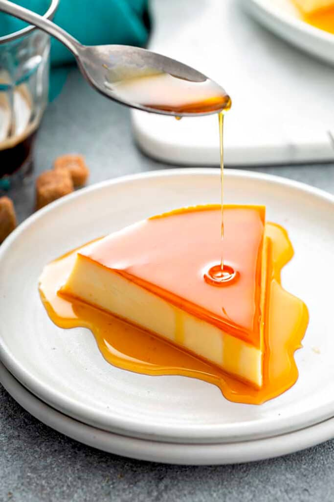

Flan

Flan is a baked custard topped with caramel. It is a soft and creamy Spanish desert similar to creme caramel.
Ingredients
- 1 cup of white sugar
- 3 eggs
- 1 can of sweetened condensed milk (14 ounces)
- 1 can of evaporated milk(12 fluid ounces)
- 1 tablespoon of vanilla extract
Steps
- Preheat the oven to 350 degrees F (175 degrees C).
- Melt sugar in a medium saucepan over medium-low heat until liquefied and golden in color. Carefully pour hot syrup into a 9-inch round glass baking dish, turning the dish to evenly coat the bottom and sides; set aside.
- Beat eggs in a large bowl. Add condensed milk, evaporated milk, and vanilla; beat until smooth. Pour egg mixture into the baking dish; cover with aluminum foil.
- Bake in preheated oven for 1 hour. Let cool completely.
- To serve, carefully invert onto a rimmed serving plate; let caramel sauce flow over flan.
Store in an airtight container in the refrigerator for up to three days!
Back